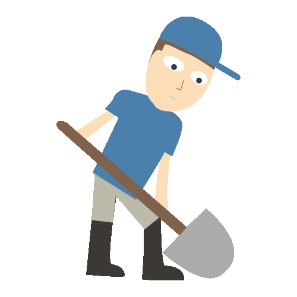

Graven in ons eigen gelijk
We hebben allemaal wel eens een gesprek gehad met iemand met waar we het niet mee eens waren. Een vriend/vriendin, je familie, iemand van school of werk misschien wel een voorbijganger.
Niet altijd lijd zo'n gesprek goed af, soms lijd dit zelfs tot een conflict of kleine ruzie die je vervolgens humeur goed kan verpesten.
"Een meningsverschil die ons heeft beïnvloed" Maar waar is dit eigenlijk goed voor?
Ons buikgevoel is de heer en meester over ons denken
Bij het vormen van een mening, zijn wij eigenlijk de berijder van onze eigen olifant. Als eerst kiest onze olifant de weg die het fijnste aanvoelt, dat is ons buikgevoel. Vervolgens volgen wij als berijders onbewust de olifant. Onze olifant (ook wel buikgevoel) heeft veel invloed op onze eerste gedachten gang en is daarom de meester over ons denken en hebben wij verder nauwelijks invloed op. Wij als berijders komen daarna aan de beurt.
Maar om van de olifant af te stappen en tegen ons buikgevoel in te gaan, vinden we erg lastig.

Hoe we uit de loopgraven van ons eigen gelijk kunnen komen
Nadat onze olifant een pad heeft uitgekozen en wij als berijders daar achteraan zijn gegaan, beginnen we ons zelf vast in het zand te graven. Niet om ons te verstoppen, maar om onze poten sterker in het zand te houden.
Met andere woorden, we staan achter onze mening en veranderen deze liever niet. We zijn trots op onze mening en graven ons zelf verder in met argumenten, standpunten en feiten om ons eigen gelijk meer gelijk te geven.
Als we een olifantenberijder tegen komen die het niet met ons eens is, dan is dat zijn probleem. We zijn niet snel geneigd om ons uit het gat te laten graven en ons bij een ander zijn mening aan te sluiten. We laten ons niet zo maar uit het veld graven.
Koppige olifantenberijders opgelet!
Maar waarom zijn meningen dan soms zo verschillend en waarom kunnen we het soms moeilijk met elkaar eens worden?
We hebben allemaal onze eigen morele intuïties (waardes en belangen). Deze worden namelijk opgemaakt uit onze gene, omgeving en opvoeding en kiezen we dus niet zelf. Onze mening staat vast aan de persoon die we zijn en ons eigen optiek op het leven.
Alleen als we in een gesprek een meningsverschil hebben, willen we graag gelijk krijgen en hebben. Met alle kennis die wij hebben waar wij ons als olifantenberijders mee in gegraven hebben, laten we ons niet van onze mening veranderen. Soms willen zelfs zo erg gelijk krijgen, dat we elkaars respect en begrip beginnen te verliezen. Het lijkt niet meer over een meningsverschil te gaan, maar om het winnen van het gesprek.
Maar gaat een meningsverschil nou echt om het winnen?
Is het doel om ons zelf echt bewijzen dat we gelijk hebben?
Boodschap
"Bij een meningsverschil gaat het niet om het winnen, maar het begrip en respect naar elkaar toe des ondanks er geen overeenstemming is."
Tip:
Wees nieuwsgierig, luister naar elkaar, respecteer en toon begrip voor elkaar ondanks het
meningsverschil. Het gaat niet om juist of onjuist, we zijn allemaal wereld verbeteraars op onze
eigen manier. Probeer een gesprek niet te winnen, maar elkaar te begrijpen.